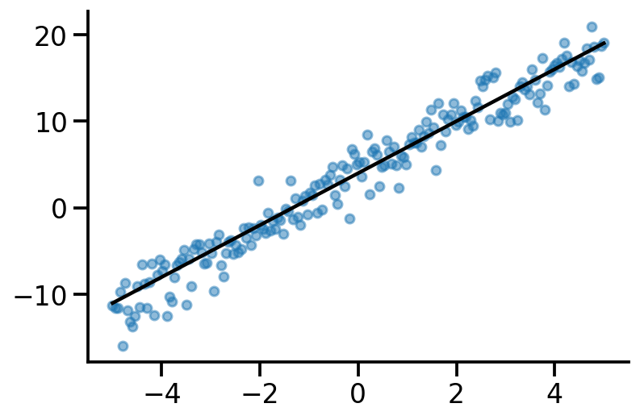
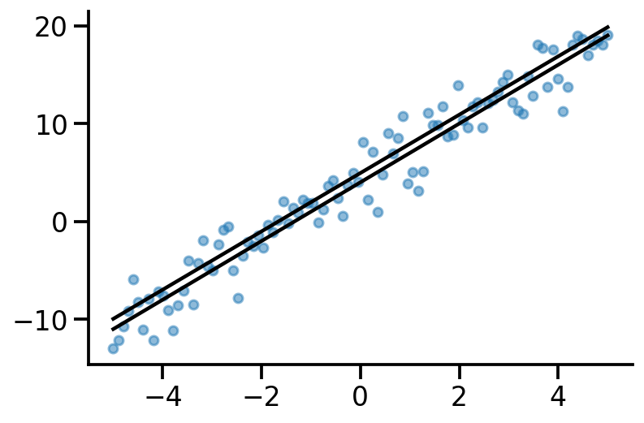

Linear Regression using Pyro#
Basic Imports#
import numpy as np
import matplotlib.pyplot as plt
import torch
import seaborn as sns
import pandas as pd
t_dist =torch.distributions
sns.reset_defaults()
sns.set_context(context="talk", font_scale=1)
%matplotlib inline
%config InlineBackend.figure_format='retina'
Creating dataset#
x = torch.linspace(-5, 5, 200)
true_y = 3*x + 4
observed_y = true_y+ 2*torch.randn(200)
plt.scatter(x, observed_y, s = 30, alpha=0.5)
plt.plot(x, true_y, color = 'k')
sns.despine()

MLE#
import pyro
import pyro.distributions as dist
import pyro.distributions.constraints as constraints
pyro.clear_param_store()
def mle_model(x, y=None):
theta_0 = pyro.param("theta_0", torch.randn(1))
theta_1 = pyro.param("theta_1", torch.randn(1))
y_hat_mean = theta_0 + theta_1*x
with pyro.plate("data", len(x)):
return pyro.sample("obs", dist.Normal(y_hat_mean, 1), obs=y)
#pyro.render_model(mle_model, model_args=(x, observed_y))
m = mle_model(x)
pyro.param("theta_0").item(), pyro.param("theta_1").item()
(-0.100727379322052, 1.5172470808029175)
for i in range(5):
plt.scatter(x, mle_model(x).detach(), s = 5, alpha = 0.4)
plt.plot(x, )
def guide(x, y):
# register the two variational parameters with Pyro.
pyro.sample("theta_0", dist.Normal(0., 1.))
pyro.sample("theta_1", dist.Normal(0., 1.))
pyro.render_model(guide, model_args=(x, observed_y))
from pyro.optim import Adam
from pyro.infer import SVI, Trace_ELBO
adam_params = {"lr": 0.005, "betas": (0.90, 0.999)}
optimizer = Adam(adam_params)
# setup the inference algorithm
svi = SVI(mle_model, guide, optimizer, loss=Trace_ELBO())
n_steps = 5000
# do gradient steps
for step in range(n_steps):
svi.step(x, y)
if step%110==0:
print(pyro.param("theta_0").item(), pyro.param("theta_1").item())
/Users/nipun/miniforge3/lib/python3.9/site-packages/pyro/util.py:288: UserWarning: Found non-auxiliary vars in guide but not model, consider marking these infer={'is_auxiliary': True}:
{'theta_1', 'theta_0'}
warnings.warn(
---------------------------------------------------------------------------
ValueError Traceback (most recent call last)
File ~/miniforge3/lib/python3.9/site-packages/pyro/poutine/trace_struct.py:230, in Trace.compute_log_prob(self, site_filter)
229 try:
--> 230 log_p = site["fn"].log_prob(
231 site["value"], *site["args"], **site["kwargs"]
232 )
233 except ValueError as e:
File ~/miniforge3/lib/python3.9/site-packages/torch/distributions/normal.py:73, in Normal.log_prob(self, value)
72 if self._validate_args:
---> 73 self._validate_sample(value)
74 # compute the variance
File ~/miniforge3/lib/python3.9/site-packages/torch/distributions/distribution.py:276, in Distribution._validate_sample(self, value)
275 if i != 1 and j != 1 and i != j:
--> 276 raise ValueError('Value is not broadcastable with batch_shape+event_shape: {} vs {}.'.
277 format(actual_shape, expected_shape))
278 try:
ValueError: Value is not broadcastable with batch_shape+event_shape: torch.Size([100]) vs torch.Size([200]).
The above exception was the direct cause of the following exception:
ValueError Traceback (most recent call last)
Input In [117], in <module>
10 # do gradient steps
11 for step in range(n_steps):
---> 12 svi.step(x, y)
13 if step%110==0:
14 print(pyro.param("theta_0").item(), pyro.param("theta_1").item())
File ~/miniforge3/lib/python3.9/site-packages/pyro/infer/svi.py:145, in SVI.step(self, *args, **kwargs)
143 # get loss and compute gradients
144 with poutine.trace(param_only=True) as param_capture:
--> 145 loss = self.loss_and_grads(self.model, self.guide, *args, **kwargs)
147 params = set(
148 site["value"].unconstrained() for site in param_capture.trace.nodes.values()
149 )
151 # actually perform gradient steps
152 # torch.optim objects gets instantiated for any params that haven't been seen yet
File ~/miniforge3/lib/python3.9/site-packages/pyro/infer/trace_elbo.py:140, in Trace_ELBO.loss_and_grads(self, model, guide, *args, **kwargs)
138 loss = 0.0
139 # grab a trace from the generator
--> 140 for model_trace, guide_trace in self._get_traces(model, guide, args, kwargs):
141 loss_particle, surrogate_loss_particle = self._differentiable_loss_particle(
142 model_trace, guide_trace
143 )
144 loss += loss_particle / self.num_particles
File ~/miniforge3/lib/python3.9/site-packages/pyro/infer/elbo.py:182, in ELBO._get_traces(self, model, guide, args, kwargs)
180 else:
181 for i in range(self.num_particles):
--> 182 yield self._get_trace(model, guide, args, kwargs)
File ~/miniforge3/lib/python3.9/site-packages/pyro/infer/trace_elbo.py:57, in Trace_ELBO._get_trace(self, model, guide, args, kwargs)
52 def _get_trace(self, model, guide, args, kwargs):
53 """
54 Returns a single trace from the guide, and the model that is run
55 against it.
56 """
---> 57 model_trace, guide_trace = get_importance_trace(
58 "flat", self.max_plate_nesting, model, guide, args, kwargs
59 )
60 if is_validation_enabled():
61 check_if_enumerated(guide_trace)
File ~/miniforge3/lib/python3.9/site-packages/pyro/infer/enum.py:75, in get_importance_trace(graph_type, max_plate_nesting, model, guide, args, kwargs, detach)
72 guide_trace = prune_subsample_sites(guide_trace)
73 model_trace = prune_subsample_sites(model_trace)
---> 75 model_trace.compute_log_prob()
76 guide_trace.compute_score_parts()
77 if is_validation_enabled():
File ~/miniforge3/lib/python3.9/site-packages/pyro/poutine/trace_struct.py:236, in Trace.compute_log_prob(self, site_filter)
234 _, exc_value, traceback = sys.exc_info()
235 shapes = self.format_shapes(last_site=site["name"])
--> 236 raise ValueError(
237 "Error while computing log_prob at site '{}':\n{}\n{}".format(
238 name, exc_value, shapes
239 )
240 ).with_traceback(traceback) from e
241 site["unscaled_log_prob"] = log_p
242 log_p = scale_and_mask(log_p, site["scale"], site["mask"])
File ~/miniforge3/lib/python3.9/site-packages/pyro/poutine/trace_struct.py:230, in Trace.compute_log_prob(self, site_filter)
228 if "log_prob" not in site:
229 try:
--> 230 log_p = site["fn"].log_prob(
231 site["value"], *site["args"], **site["kwargs"]
232 )
233 except ValueError as e:
234 _, exc_value, traceback = sys.exc_info()
File ~/miniforge3/lib/python3.9/site-packages/torch/distributions/normal.py:73, in Normal.log_prob(self, value)
71 def log_prob(self, value):
72 if self._validate_args:
---> 73 self._validate_sample(value)
74 # compute the variance
75 var = (self.scale ** 2)
File ~/miniforge3/lib/python3.9/site-packages/torch/distributions/distribution.py:276, in Distribution._validate_sample(self, value)
274 for i, j in zip(reversed(actual_shape), reversed(expected_shape)):
275 if i != 1 and j != 1 and i != j:
--> 276 raise ValueError('Value is not broadcastable with batch_shape+event_shape: {} vs {}.'.
277 format(actual_shape, expected_shape))
278 try:
279 support = self.support
ValueError: Error while computing log_prob at site 'obs':
Value is not broadcastable with batch_shape+event_shape: torch.Size([100]) vs torch.Size([200]).
Trace Shapes:
Param Sites:
theta_0 1
theta_1 1
Sample Sites:
obs dist 200 |
value 100 |
x = torch.linspace(-5, 5, 100)
predicted_y = pyro.param("theta_1").item()*x + pyro.param("theta_0").item()
#observed_y = true_y+ 2*torch.randn(100)
plt.scatter(x, observed_y, s = 30, alpha=0.5)
plt.plot(x, predicted_y, color = 'k')
plt.plot(x, true_y, color = 'k')
sns.despine()

data_dim = 2
latent_dim = 1
num_datapoints = 100
z = dist.Normal(
loc=torch.zeros([latent_dim, num_datapoints]),
scale=torch.ones([latent_dim, num_datapoints]),)
w = dist.Normal(
loc=torch.zeros([data_dim, latent_dim]),
scale=5.0 * torch.ones([data_dim, latent_dim]),
)
w_sample= w.sample()
z_sample = z.sample()
x = dist.Normal(loc = w_sample@z_sample, scale=2)
x_sample = x.sample([100])
plt.scatter(x_sample[:, 0], x_sample[:, 1], alpha=0.2, s=30)
<matplotlib.collections.PathCollection at 0x135cdf700>

Generative model for PPCA in Pyro#
import pyro.distributions as dist
import pyro.distributions.constraints as constraints
import pyro
pyro.clear_param_store()
def ppca_model(data, latent_dim):
N, data_dim = data.shape
W = pyro.param("W", torch.zeros((data_dim, latent_dim)))
#print(W.shape, data_dim, (data_dim, latent_dim))
for i in range(N):
z_vec = pyro.sample("z_{}".format(i), dist.Normal(loc = torch.zeros(latent_dim), scale = 1.))
#print(W.shape, z.shape, W@z)
pyro.sample(fr"\$x_{i}\$", dist.Normal(W@z_vec, 2.), obs=data[i])
pyro.render_model(ppca_model, model_args=(torch.randn(150, 3), 1))
pyro.clear_param_store()
def ppca_model2(data, latent_dim):
N, data_dim = data.shape
W = pyro.param("W", torch.zeros((data_dim, latent_dim)))
#print(W.shape, data_dim, (data_dim, latent_dim))
z_vec = pyro.sample("z", dist.Normal(loc = torch.zeros([latent_dim, N]), scale = 1.))
print(W.shape, z_vec.shape, (W@z_vec).t().shape, data.shape)
return pyro.sample("obs", (W@z_vec).t(), obs=data)
pyro.render_model(ppca_model2, model_args=(torch.randn(150, 3), 1))
torch.Size([3, 1]) torch.Size([1, 150]) torch.Size([150, 3]) torch.Size([150, 3])
---------------------------------------------------------------------------
AttributeError Traceback (most recent call last)
Input In [110], in <module>
9 print(W.shape, z_vec.shape, (W@z_vec).t().shape, data.shape)
10 return pyro.sample("obs", (W@z_vec).t(), obs=data)
---> 12 pyro.render_model(ppca_model2, model_args=(torch.randn(150, 3), 1))
File ~/miniforge3/lib/python3.9/site-packages/pyro/infer/inspect.py:494, in render_model(model, model_args, model_kwargs, filename, render_distributions)
471 def render_model(
472 model: Callable,
473 model_args: Optional[tuple] = None,
(...)
476 render_distributions: bool = False,
477 ) -> "graphviz.Digraph":
478 """
479 Renders a model using `graphviz <https://graphviz.org>`_ .
480
(...)
492 :rtype: graphviz.Digraph
493 """
--> 494 relations = get_model_relations(model, model_args, model_kwargs)
495 graph_spec = generate_graph_specification(relations)
496 graph = render_graph(graph_spec, render_distributions=render_distributions)
File ~/miniforge3/lib/python3.9/site-packages/pyro/infer/inspect.py:287, in get_model_relations(model, model_args, model_kwargs)
283 if site["type"] != "sample" or site_is_subsample(site):
284 continue
285 sample_sample[name] = [
286 upstream
--> 287 for upstream in get_provenance(site["fn"].log_prob(site["value"]))
288 if upstream != name
289 ]
290 sample_dist[name] = _get_dist_name(site["fn"])
291 for frame in site["cond_indep_stack"]:
AttributeError: 'ProvenanceTensor' object has no attribute 'log_prob'
dist.Normal(loc = torch.tensor([0.]), scale = 1.).sample()
tensor([-1.2529])
pyro.clear_param_store()
D = 2
d = 1
data = torch.zeros(100, D)
def ppca(data):
A = pyro.param("A", torch.zeros((D, d)))
mu = pyro.param("mu", torch.zeros(D))
for i in pyro.plate("data", len(data)):
z = pyro.sample("latent_{}".format(i), dist.Normal(torch.zeros(d), 1.0).to_event(1))
pyro.sample("observed_{}".format(i), dist.Normal(A @ z + mu, 1.0).to_event(1), obs=data[i])
pyro.render_model(ppca, model_kwargs={'data':data})
ppca(data)
data.shape
torch.Size([100, 2])
N = 1000
x = np.random.normal(loc = 5, scale = 1., size = N)
o = {}
for i in range(N-2):
o[i] = x[:i+2].std()
pd.Series(o).plot()
plt.axhline(y=1)
sns.despine()

x2 = np.array(list(o.values()))
o2 = {}
for i in range(N-3):
o2[i] = x2[:i+2].std()
pd.Series(o2).plot()
<AxesSubplot:>